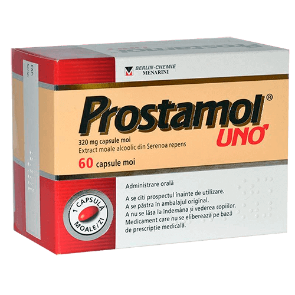

În Israel bărbații urmează un curs de tratament de
prostatită în decurs de 2-3 săptămâni, cu aplicarea unei metode speciale, și se tratează o dată
și
pentru totdeauna.
(metoda este descrisă mai jos)
Între timp în România: medicii avari de bani sunt în complicitate cu farmaciile și ascund anual de bărbați preparatele eficiente și scurg bani, prescriind medicamente și proceduri foarte scumpe! (ca să aflați cum să găsiți acest preparat și unde să-l obțineți, citiți atent articolul prezentat mai jos)
Prostatita este cel mai des întâlnită boală între bărbații mai în vârstă de 40 de ani, iar medicii au observat în ultimii ani o tendință neplăcută de întinerire a acestei boli. Tot mai des bărbații se adresează la medici cu aceste probleme în vârsta de 30, 25 și chiar 20 de ani.
Boala poate fi provocată de următoarele obișnuințe și comportament
- - modul sedentar de viață,
- - viața sexuală neregulată,
- - boli infecțioase
- - predispoziție ereditară,
- - stresul și bolile sistemului uro-genital,
În lumea contemporană este foarte simplu să ai probleme cu prostata. Unii oameni le au la 25 de ani, unii la 45 de ani, este doar o problemă de timp.
Verifică dacă ai simptome de prostatită:
În anul 2019 Secția de urologie a publicat o statistică îngrozitoare: peste 72% din bărbații cu vârsta de peste 37 de ani au probleme cu prostata. Să stabilești existența prostatitei este foarte simplu și nu necesită pregătire medicală, majoritatea simptomelor au un caracter specific:
-
Dureri tăioase:
- - În partea de jos a burții, în scrot;
- - în perineu sau organul genital;
-
Probleme la urinare:
- - urinare deasă, arsuri în uretră;
- - senzația incompletă a vezicii urinare golite
- - dificultăți la urinare (jet de urină slab)
-
Disfuncții sexuale:
- - scăderea atracției sexuale;
- - înrăutățirea duratei și calității erecției;
-
Tulburări ale ejaculării:
- - ejaculare precoce sau probleme cu atingerea acesteia;
- - ejaculare slabă
Și de asemenea, oboseală și iritabilitate crescută
Făcând abstracție de la calitatea evident scăzută a vieții, mulți bărbați trăiesc cu prostatită cu anii, neconștientizând urmările de nerecuperat a acestui lucru, deoarece senzațiile neplăcute pot părea mai mult sau mai puțin compatibile cu viața.

O prostatită netratată până la
capăt întotdeauna duce la
adenoma prostatei. ("mortalitate masculină")
Parțial acești bărbați pot fi înțeleși, doar diagnostica prostatitei la fiecare, care înțelege specificul acestui proces, provoacă o depresie grea și prelungită. Mai mult, în majoritatea covârșitoare a cazurilor, după stabilirea diagnosticului de prostatită, adresarea la urolog devine o obligație anuală. Medicii elimină cele mai acute simptome cu ajutorul medicamentelor, recomandate de farmaciști, totuși, de îndată ce recomandările încetează să mai fie aplicate, prostatita revine din nou
Cum tratăm prostatita (și cum NU trebuie să o tratăm)
Cel mai trist e că de prostatită nu este atât de simplu să scapi, chiar dacă vrei asta cu adevărat.
Tratamentul standard al prostatitei:
Mergeți la spital sau la medic: aceasta nu are importanță, deoarece pana la urma urmei tot va trebui să plătiți.
Medicul efectuează consultația, prescrie un șir de analize medicale la specialiști. Unele dintre ele nici nu sunt necesare, dar în acest caz, brusc, de regulă, mai apare ceva ce poate fi tratat. Pe lână aceasta, fiecare dintre aceste vizite este legată de cheltuieli.
După consult medicul pune diagnosticul prostatită și prescrie preparate recomandate. Medicamentele prescrise sunt destinate pentru ușurarea simptomelor acute ale bolii, dar nu pentru tratarea prostatitei cronice. Și desigur, urologul vă va recomanda medicamentele companiilor farmaceutice, reprezentanții medicali ai cărora i-au adus cei mai mulți bani. Aceste medicamente sunt larg cunoscute și li se face publicitate.
Pe lângă preparatele recomandate pentru ușurarea simptomelor, medicii întotdeauna prescriu masaj rectal al prostatei sau tratament cu efect analogic. Este o procedură umilitoare și foarte neplăcută, masajul se face cu ajutorul degetului, care este introdus în anus. În medie masajul ia 10-14 ședințe. Pentru fiecare ședință, desigur, va trebui să plătiți.
În completarea tratamentului de bază, medicii deseori prescriu preparate pentru îmbunătățirea funcțiilor sexuale, îmbunătățirea calității spermei, tratamentul organismului după administrarea antibioticelor ș.a.m.d
Astfel, tratamentul unic al prostatitei în România costă de la 300 la 1500 euro, urologii, de facto, organizează un ciclu de tratament, bazat, în primul rând, pe posibilitățile financiare ale pacientului. În acest caz vor fi înlăturate numai simptomele acute de bază ale bolii. Prostatita cronică se va păstra și va apărea din nou, imediat ce veți înceta să urmați dieta recomandată de medicul dvs. În rezultatul acestui lucru, anual sunt cheltuite anumite sume, fapt pe care se bazează activitatea companiilor farmaceutice.
Cum este tratată prostatita în Israel?
În Israel nici nu e necesar să te adresezi la medic pentru tratarea prostatitei. Este suficient la primele simptome să vă adresați la farmacie și să cumpărați preparatele care sunt verificate de zeci de ani și care nu ajung pe piața românească numai din cauza că ajută pe deplin (o dată în viață și pentru totdeauna) să tratezi prostatita cronică! Desigur, asemenea preparat nu este rentabil mafiei reprezentate de companiile farmaceutice românești, doar este mult mai rentabil ca să existe oameni cărora trebuie să-i ajuți în fiecare an să scape de durere, decât să tratezi boala cu un medicament care este absolut ieftin și accesibil pentru toți. Spre deosebire de țara noastră asigurarea medicală privată în Israel este înalt dezvoltată. Companiile de asigurări medicale nu sunt interesate de existența unor pacienți care vizitează medicul mai des de 2 ori pe an, deoarece companiile trebuie să plătească pentru aceasta, iar salariile medicilor acolo sunt destul de înalte. Dimpotrivă, ei sunt interesați ca tratamentul să fie cât se poate de eficient și rapid.
În Israel interesele agențiilor de asigurări au învins mafia companiilor farmaceutice și, din fericire pentru oamenii simpli, o soluție lucrativă pentru tratamentul prostatitei este întotdeauna în vânzare...
Se va schimba oare situația în bine în România?
Din păcate nu putem aștepta schimbări în bine în această sferă, deoarece business-ul multimiliardar al companiilor farmaceutice europene nu va permite să aibă loc asta.
Totuși, astăzi nu este obligatoriu să procuri medicamentele în farmacii. Aceasta poate fi făcut prin Internet de pe site-uri specializate. Chiar de curând unul dintre cele mai eficiente medicamente din Israel a devenit . Acest produs poate fi, de asemenea, procurat în țara noastră. Aproape imediat după apariția sa pe piață el a avut un succes enorm.
Haideți să comparăm, prin ce se deosebește de cel mai popular preparat pentru tratamentul prostatitei, Prostamol-UNO, care este propus de către farmacii
 |
 Prostamol UNO |
|---|---|
| Prețul: | |
| PUTEȚI OBȚINE CU REDUCERE DE 50%! | Aproximativ 52 euro pentru 60 capsule. Un curs de tratament propus: 3 cutii = 156 euro. |
| Acțiunea: | |
| Vindecă pe deplin de prostatită, chiar și de cea cronică. O dată și pentru totdeauna. După 1 curs de administrare. | El doar înlătură simptomele acute ale prostatitei – durerea și disfuncția urinară. |
| Proprietăți suplimentare: | |
|
Soluția înmoaie conținutul intestinului, îmbunătățește peristaltica intestinului |
| Efecte secundare, daune pentru organism: | |
| Lipsesc. Ingredientele sunt complet naturale. |
|
| Principiul de acțiune: | |
| Are o acțiune terapeutică generală asupra prostatei datorită compoziției special selectate din 6 ingrediente naturale, are o acțiune antiinflamatoare și de întărire. Înlătură toată microflora patogenă a prostatei, îmbunătățește structura și funcțiile ei. Este recomandat în cazul prostatitei cronice, statice și bacteriale. | Ușurează temporar durerea de prostată, mascând decursul bolii. Totuși, după terminarea acțiunii preparatului boala din nou se acutizează. |
| Componentele: | |
| Componente naturale vegetale și vitamine | Unicul component natural – fructele mărunțite ale palmierilor pitici (nici măcar extract). Toate celelalte sunt chimicale obișnuite: dioxid de titan, colorant oxid negru de fier, colorant carmin roșu (E124) ș.a. |
În țara noastră producătorului i-a reușit să facă această soluție accesibilă pentru toți! După lungi tratative "cu persoanele potrivite", noi am reușit să lansăm programul de stat"Sănătatea bărbătească". Scopul programului este să ofere fiecărui om posibilitatea de a vindeca prostatita, fără a ajunge la stadiile de cancer, indiferent de starea sa financiară. În cadrul programului de stat menționat dvs veți obține cu reducere de 50%.
poate fi procurat pe site-ul producătorului, apăsând pe butonul de mai jos.
O campanie la scară largă, inițiată de companiile mari farmaceutice ale țării, cu referire la acest preparat deja a început. Posibil, foarte curând va fi imposibil de vândut preparatul. Noi recomandăm tuturor bărbaților să procure , cât încă mai este posibil. Până la (inclusiv) preparatul se va vinde cu reducere de 50%!
PUTEȚI OBȚINE CU REDUCERE 50%! LĂSAȚI O SOLICITARE DE PARTICIPARE ÎN PROGRAM.
Comentarii
Chiril
Confirm în totalitate: - este un preparat uimitor. Eu l-am procurat în Muntenegru în timpul concediului vara trecută, aproape cu 200 euro. Până la asta eu am suferit de prostatită cronică în decurs de 10 ani. Am încercat să-l tratez cu preparate clasice, dar aceasta dădea numai un rezultat temporar. La folosirea prostatita a dispărut complet. Îl recomand tuturor bărbaților: . Aceasta va ajuta!


Nicolae
Și eu am avut o experiență de tratare a prostatitei cu acest preparat. L-am cumpărat pe site-ul indicat, numai că atunci nu era în stoc în depozit, și costa aproximativ 50 de euro o cutie. Dar aceasta a meritat, deoarece am scăpat de prostatită în aproximativ 2 săptămâni fără a apela la masaj.

Alexandru
Am prostatită cronică de la 28 de ani. Acum am 411 de ani. În tot acest timp am tratat-o de două ori, dar fără rezultate deosebite. Data trecută medicii abia de m-au salvat. Mi-au spus că prostatita poate degenera în cancer de prostată. De aceea eu recomand tuturor celor care au prostatită să scape cât mai repede de ea. Este foarte periculoasă.


Pavel
Băieți, este într-adevăr un produs care merită. La început eram foarte sceptic. L-am primit peste câteva zile, iar acum, după o lună de administrare, eu nu mai am nici urmă de prostatită. Nici dureri, nici inflamații, nici probleme cu urinarea. Mai pe scurt vorbind, eu sunt foarte mulțumit. Îl recomand.
Sergiu Cătană
Sunt gata să mă semnez sub fiecare cuvânt! Acest preparat este pur și simplu super! L-am cumpărat de curând, o jumătate de lună în urmă și am uitat de problemă. Mi-a trecut prostatita, chiar dacă mult timp nu puteam s-o tratez, și în plus mi s-a îmbunătățit erecția vizibil, și vreau să fac sex mult mai mult! Îl recomand tuturor, în special bărbaților peste 40 de ani. Mulțumesc .

Victor
Prieteni, nu o întindeți cu asta, dacă prostatita va deveni cronică aceasta va duce la cancer de prostată, unul dintre rudele mele, din păcate, a murit din cauza aceasta, de aceea la primele semne eu m-am adresat imediat la medic. Am mers pe la medici un an întreg, dar nu s-a schimbat nimic. Eu mă voi trata cu . Aceasta este puțin, dar e sigur.
Andrei Sorescu
În ultimele un an și jumătate am avut probleme cu prostata, am făcut masaj, am luat pastile, dar aceasta nu mi-a ajutat. Cu ajutorul dimpotrivă, am rezolvat toate problemele în două săptămâni, și în plus într-adevăr am uitat de prostatită, chiar dacă edicul a zis că a devenit cronică și că nu are cu ce mă ajuta.

Andrei
Am început să mă tratez cu cunoscutul preparat Afala, îl luam după prescripția medicului aproape două luni, dar nu am avut nici un fel de rezultate. Nu mă simțeam mai bine și tot mai des alergam la toaletă. Tratamentul doar mi-a înrăutățit situația. Aici în internet am găsit . M-am gândit că n-ar fi rău să încerc să-l demonstrez după acest eșec medical:) Ei, da, medicamentele nu m-au ajutat, ce e de făcut, iar mi-a rezolvat problema pe deplin și repede!

Eugen Barzu
Niciodată nu m-am gândit că o să mi se stabilească această diagnoză îngrozitoare. Pentru un tânăr aceasta pune cruce și pe viața lui sexuală și pe încrederea în sine. Dar eu nu disperam și încercam să mă tratez pe câteva direcții. Nu-mi pare rău de tratament. Eu m-am tratat mult timp, dar la urma urmelor mi-a ajutat numai ! Eu nici nu puteam să-mi imaginez că el acționează așa repede și eficient

Ștefan Roman
Băieți, e chiar îngrozitor. Eu trăiesc cu diagnosticul prostatită deja de cinci ani! Am acutizări până la 5 ori pe an.! Se pare că e mai bine, dar apoi revin toate simptomele. Orice medic, în afară de antibiotice, nu știe ce să-mi recomande. Numai-numai intervine o ușurare și iar totul din nou! Am obosit să iau antibiotice, mi se pare că organismul nu le mai suportă. Cum credeți, mă va ajuta?

Sandu
Eu mi-am tratat prostatita cu Afala, am cumpărat-o în 2000. De asemenea făceam exerciții speciale ca să micșorez dimensiunea prostatei, asta mi-a ajutat, și chiar foarte mult m-a ajutat, dar apoi totul a început din nou și a trebuit să reîncep cursul de tratament. Iar cu nu a fost nici o recidivă, m-am vindecat o dată și pentru totdeauna.
Elizaveta
Și soțul meu a avut probleme, noi am încercat mult timp să ne tratăm, dar nu reușeam. Apoi medicul mi-a spus că bacteriile care au provocat infecția, deja s-au obișnuit cu antibioticele pe care le lua soțul meu. Atunci el ne-a recomandat . Soțul meu i-a dus după aceea o sticlă de whisky drept mulțumire.


Ion Măgureanu
Ei, nu are analogi pe piață. Acest preparat chiar previne riscul de dezvoltare a bolilor oncologice. Este singurul preparat, care funcționează 100%. Eu i-am încercat acțiunea asupra mea, a mai ajutat și la doi cunoscuți de-ai mei. Acum pot cu încredere să spun că aceasta nu este părerea mea-, ci experiența a câțiva oameni.
Anton
Mulțumesc pentru articolul interesant: în România totul este corupt la cel mai înalt nivel, este plăcut că internetul încă mai este o cale de a afla ceea ce nu știm. Am comandat cu reducere. Vreau să mă vindec.